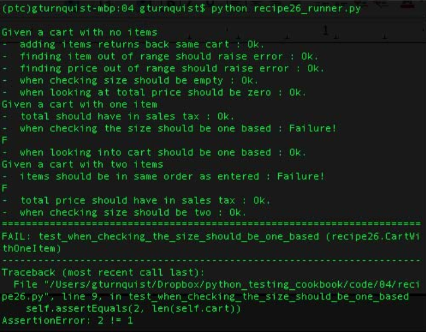
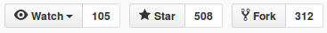
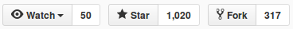
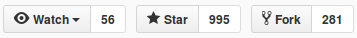
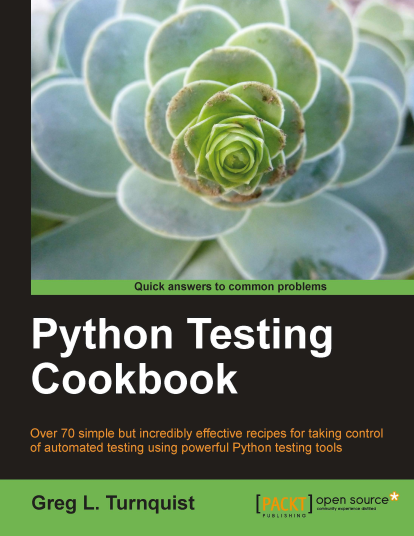

Testing
with
Python
¿Qué es un test?
Un fragmento de código que comprueba automáticamente otro.
¿Funcionalidad?
¿Rendimiento?
¿Estrés?
...
Funcionalidad
¿Debería ser escrito por otra persona?
Pair ProgrammingNecesario definir estrategia.
thinking about this...

Test Drive Development
Desarrollo guiado por pruebas
Kent Beck
eXtreme Programming, uno de los 17 firmantes del Manifiesto Ágil - 2011Fundamentos:
1. Escribir los tests.
2. Programar lo minimo para que estos tests se pasen.
3. Repetir.
Introducción a TDD
¿Y cuándo hablamos de Python?
Unittest
Python unit testing framework,based on Erich Gamma's JUnit andKent Beck's Smalltalk testing framework.
Test unitarios clásicos.
Se basa en la JUnit de Java.
Incluida en la Standard Library.
def stupid_function(x):
return x + 1
class stupid_test(unittest.TestCase):
def test(self):
self.assertEqual(stupid_function(3), 4)
if __name__ == '__main__':
unittest.main()
> python unittest_example.py -v
test (__main__.stupid_test) ... ok
-----------------------------------
Ran 1 test in 0.003s
OK
nose
nose extends unittest to make testing easier.Puede ejecutar unittest y clases propias.
def stupid_function(a, b):
return a+b
def stupid_test():
assert stupid_function(2,8) == 10
> nosetests -v nose_example.py
nose_example.stupid_test ... ok
--------------------------------
Ran 1 test in 0.001s
OK
pytest
TheCubre la misma funcionalidad que unittest y nose.
Posee el mejor mecanismo para fixtures.
Maximiza la relación esfuerzo - resultados.
def func(x):
return x + 1
def test_answer():
assert func(3) == 4
> pytest pytest_example.py
=============== test session starts =======================
platform linux2 -- Python 2.7.6, pytest-3.0.3,
rootdir: examples, inifile:
plugins: cov-2.4.0
collected 1 items
pytest_example.py .
=============== 1 passed in 0.01 seconds ===================
def func(x):
return x + 1
def test_answer():
assert func(3) == 5
> pytest pytest_example.py
=================== test session starts ================
platform linux2 -- Python 2.7.6, pytest-3.0.3
rootdir: examples, inifile:
plugins: cov-2.4.0
collected 1 items
pytest_example.py F
=================== FAILURES ===========================
________________________ test_answer ___________________
def test_answer():
> assert func(3) == 5
E assert 4 == 5
E + where 4 = func(3)
pytest_example.py:5: AssertionError
=================== 1 failed in 0.04 seconds ============
doctest
A framework for running examples in docstrings.Cambio de estilo
“literate testing”
“executable documentation”
El código se testea en tiempo de ejecución.
def sum(a, b):
"""
>>> sum(2, 4)
6
>>> sum('a', 'b')
'ab'
"""
return a+b
print sum(3,4)
print sum('Hi', 'bye')
if __name__ == "__main__":
import doctest
doctest.testmod()
> python docstest_example.py
7
Hibye
> python docstest_example.py -v
7
Hibye
Trying:
sum(2, 4)
Expecting:
6
ok
Trying:
sum('a', 'b')
Expecting:
'ab'
ok
1 items had no tests:
__main__
1 items passed all tests:
2 tests in __main__.sum
2 tests in 2 items.
2 passed and 0 failed.
Test passed.
...
return a+b+b
...
> python docstest_example.py
11
Hibyebye
****************************************************
File "docstest_example.py", line 3, in __main__.sum
Failed example:
sum(2, 4)
Expected:
6
Got:
10
*****************************************************
File "docstest_example.py", line 5, in __main__.sum
Failed example:
sum('a', 'b')
Expected:
'ab'
Got:
'abb'
*****************************************************
1 items had failures:
2 of 2 in __main__.sum
***Test Failed*** 2 failures.
Behavior Drive Development
"Orientado a No Programadores."
Fue creado como respuesta a TDD por Dan North.
"“Behaviour” is a more useful word than “test”."
Tests pensados para ser leídos / comprendidos.
"... TDD – the resulting set of methods is an effective way of ensuring your code works. However, if the methods do not comprehensively describe the behaviour of your system, then they are lulling you into a false sense of security."
"Naming tests that sound like sentences and stories."

Los tests deben ser escritos como sentencias con una sintaxis específica.
La idea es que los test puedan ser escritos por no programadores en las historias de usuario y que puedan ser pasados a código sin perder la expresividad ni en la escritura ni en la ejecución.
Así un de un test no se espera comprobar un resultado estricto sino un comportamiento (independientemente del nivel del test)
Give me an example!
MAMBA
Nestor Salceda
The definitive testing tool for Python. Born under the banner of Behavior Driven Development (BDD).
Behave
Behavior-driven development (or BDD) is an agile software development technique that encourages collaboration between developers, QA and non-technical or business participants in a software project.
Feature: Cálculo del incentivo salarial.
Para calcular la cuantía del bono salarial,
como administrador
quiero que a cada vendedor se le aplique su bono
en base a las ventas mensuales.
Scenario: Vendedor supera las 1000 unidades
Given un vendedor que vende 5000
When supera las 1000
Then el vendedor deberia tener un plus de 5000
Scenario: Vendedor no supera las 1000 unidades
Given un vendedor que vende 360
When no supera las 1000
Then el vendedor deberia tener un plus de 0
from behave import given, when, then
@given('un vendedor que vende {unidades}')
def step_ventas_del_vendedor(context, unidades):
context.vendedor_ventas = unidades
@when('supera las 1000')
def step_calculo_porcentaje(context):
assert calcula_plus(context.vendedor_ventas) == context.vendedor_ventas
@when('no supera las 1000')
def step_calculo_porcentaje(context):
assert calcula_plus(int(context.vendedor_ventas)) == 0
@then('el vendedor deberia tener un plus de {euros}')
def step_el_vendedor_deberia(context, euros):
assert context.failed is False
def calcula_plus(ventas):
if ventas > 1000:
return ventas
else:
return 0
> behave
Feature: Cálculo del incentivo salarial. # features/tutorial.feature:1
Para calcular la cuantía del bono salarial,
como administrador
quiero que a cada vendedor se le aplique su bono
en base a las ventas mensuales.
Scenario: Vendedor supera las 1000 unidades # features/tutorial.feature:8
Given un vendedor que vende 5000 # features/steps/tutorial.py:4 0.001s
When supera las 1000 # features/steps/tutorial.py:9 0.000s
Then el vendedor deberia tener un plus de 5000 # features/steps/tutorial.py:19 0.000s
Scenario: Vendedor no supera las 1000 unidades # features/tutorial.feature:13
Given un vendedor que vende 360 # features/steps/tutorial.py:4 0.000s
When no supera las 1000 # features/steps/tutorial.py:14 0.000s
Then el vendedor deberia tener un plus de 0 # features/steps/tutorial.py:19 0.000s
1 feature passed, 0 failed, 0 skipped
2 scenarios passed, 0 failed, 0 skipped
6 steps passed, 0 failed, 0 skipped, 0 undefined
Took 0m0.002s
¿Cuál elegir?
El que más os guste, solo las pequeñas diferencias y las singularidades de vuetro dominio os hará decidir por uno u otro.
test and code podcastunittest

nose

pytest

No es oro todo lo que reluce, encontraremos muchos problemas:
- Granularidad del testing / valor de negocio
- Tiempo de escritura
- Complejidad de la sintaxis
- Dependencias externas
- Automatización
- Ejecución segmentada
- La elección de herramientas / estilos
Si unimos todo eso...

TODAS las buenas herramientas han pensado en algo para hacer el testeo mucho más fácil.
@unittest.skipUnless(sys.platform.startswith("win"), "requires Windows")
> python unittest_example.py -v MyTest.updateUserMethod
preparación
@classmethod
def setUpClass(cls):
...
@classmethod
def tearDownClass(cls):
...
mockeado de elementos externos
fixtures
descubrimiento
plugins
- ...
Python Testing Tools Taxonomy
- Unit Testing Tools
- Mock Testing Tools
- Fuzz Testing Tools ("random data")
- Web Testing Tools
- Acceptance/Business Logic Testing Tools
- GUI Testing Tools
- Source Code Checking Tools (PyLint)
- Code Coverage Tools
- Continuous Integration Tools
- Automatic Test Runners
- Test Fixtures
- Miscellaneous Python Testing Tools
wiki.python.org/moin/PythonTestingToolsTaxonomy
Claves:
El primer paso siempre son los test unitarios,
con la librería que más comodo te sientas
y a partir de ahí hasta donde quieras llegar
pero siempre testea, de una manera u otra y que esto sea parte del proyecto desde su inicio
encontrando el equilibrio: no existen dos proyectos iguales.
Unas últimas referencias:

Python Testing Cookbook - Greg L. Turnquist
... muchos más en la biblioteca electrónica.http://pythontesting.net/ (posts y podcasts)
Any question?
About me:
twitter: @sinclair_88
linkedin: juanafernandez
mail: juan.antonio.fernandez.sanchez.88@gmail.com